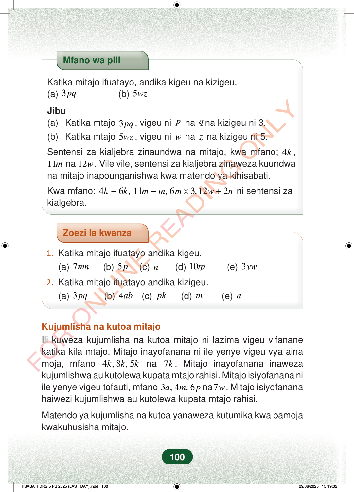

Mfano wa piliKatika mitajo ifuatayo, andika kigeu na kizigeu.(a)3pq(b)5wzJibu(a)Katika mtajo3pq, vigeu nipnaqna kizigeu ni 3.(b)Katika mtajo5wz, vigeu niwnazna kizigeu ni 5.Sentensi za kialjebra zinaundwa na mitajo, kwa mfano;4k,11mna12w. Vile vile, sentensi za kialjebra zinaweza kuundwana mitajo inapounganishwa kwa matendo ya kihisabati.Kwa mfano:46,11, 63,122kkmmmwn+−×÷ni sentensi zakialgebra.Zoezi la kwanza1.Katika mitajo ifuatayo andika kigeu.(a)7mn(b)5p(c)n(d)10tp(e)3yw2.Katika mitajo ifuatayo andika kizigeu.(a)3pq(b)4ab(c)pk(d)m(e)aKujumlisha na kutoa mitajoIli kuweza kujumlisha na kutoa mitajo ni lazima vigeu vifananekatika kila mtajo. Mitajo inayofanana ni ile yenye vigeu vya ainamoja, mfano4, 8, 5kkkna7k. Mitajo inayofanana inawezakujumlishwa au kutolewa kupata mtajo rahisi. Mitajo isiyofanana niile yenye vigeu tofauti, mfano3, 4, 6ampna7w. Mitajo isiyofananahaiwezi kujumlishwa au kutolewa kupata mtajo rahisi.Matendo ya kujumlisha na kutoa yanaweza kutumika kwa pamojakwakuhusisha mitajo.100
Mfano wa pili
Katika mitajo ifuatayo, andika kigeu na kizigeu. (a) 3 pq (b) 5 wz
Jibu (a) Katika mtajo 3 pq , vigeu ni p na q na kizigeu ni 3. (b) Katika mtajo 5 wz , vigeu ni w na z na kizigeu ni 5.
Sentensi za kialjebra zinaundwa na mitajo, kwa mfano; 4 k , 11 m na 12 w . Vile vile, sentensi za kialjebra zinaweza kuundwa na mitajo inapounganishwa kwa matendo ya kihisabati.
Kwa mfano: 4 6 , 11 , 6 3,12 2 k k m m m w n + − × ÷ ni sentensi za kialgebra.
Zoezi la kwanza
1. Katika mitajo ifuatayo andika kigeu. (a) 7 mn (b) 5 p (c) n (d) 10 tp (e) 3 yw
2. Katika mitajo ifuatayo andika kizigeu. (a) 3 pq (b) 4 ab (c) pk (d) m (e) a
Kujumlisha na kutoa mitajo Ili kuweza kujumlisha na kutoa mitajo ni lazima vigeu vifanane katika kila mtajo. Mitajo inayofanana ni ile yenye vigeu vya aina moja, mfano 4 , 8 , 5 k k k na 7 k . Mitajo inayofanana inaweza kujumlishwa au kutolewa kupata mtajo rahisi. Mitajo isiyofanana ni ile yenye vigeu tofauti, mfano 3 , 4 , 6 a m p na 7 w . Mitajo isiyofanana haiwezi kujumlishwa au kutolewa kupata mtajo rahisi.
Matendo ya kujumlisha na kutoa yanaweza kutumika kwa pamoja kwakuhusisha mitajo.
100
Mfano unaonyesha kuwa katika 3pq, vigeu ni p na q, na kizigeu ni 3. Pia katika 5wz, vigeu ni w na z, na kizigeu ni 5; kuna mifano ya sentensi za kialjebra kama 4k + 6k na 11m − m.Mfano wa piliKatika mitajo ifuatayo, andika kigeu na kizigeu.<math><mrow><mrow><mo fence="true" form="prefix" stretchy="false">(</mo><mi>a</mi><mo fence="true" form="postfix" stretchy="false">)</mo></mrow><mspace width="0.2778em"></mspace><mn>3</mn><mi>p</mi><mi>q</mi><mspace width="2em"></mspace><mrow><mo fence="true" form="prefix" stretchy="false">(</mo><mi>b</mi><mo fence="true" form="postfix" stretchy="false">)</mo></mrow><mspace width="0.2778em"></mspace><mn>5</mn><mi>w</mi><mi>z</mi></mrow></math>Jibu(a) Katika mtajo 3pq, vigeu ni p na q na kizigeu ni 3.(b) Katika mtajo 5wz, vigeu ni w na z na kizigeu ni 5.Sentensi za kialjebra zinaundwa na mitajo, kwa mfano; 4k, 11m na 12w.Vile vile, sentensi za kialjebra zinaweza kuundwa na mitajo inapounganishwa kwa matendo ya kihisabati.Kwa mfano: 4k + 6k, 11m - m, 6m × 3, 12w ÷ 2n ni sentensi za kialgebra.
Zoezi la kwanzaMazoezi ya kwanza yanauliza kuandika kigeu katika 7mn, 5p, n, 10tp na 3yw. Pia yanauliza kuandika kizigeu katika 3pq, 4ab, pk, m na a.1.Katika mitajo ifuatayo andika kigeu.(a) 7mn(b) 5p(c) n(d) 10tp(e) 3yw2.Katika mitajo ifuatayo andika kizigeu.(a) 3pq(b) 4ab(c) pk(d) m(e) aKujumlisha na kutoa mitajoIli kuweza kujumlisha na kutoa mitajo ni lazima vigeu vifanane katika kila mtajo.Mitajo inayofanana ni ile yenye vigeu vya aina moja, mfano 4k, 8k, 5k na 7k.Mitajo inayofanana inaweza kujumlishwa au kutolewa kupata mtajo rahisi.Mitajo isiyofanana ni ile yenye vigeu tofauti, mfano 3a, 4m, 6p na 7w.Mitajo isiyofanana haiwezi kujumlishwa au kutolewa kupata mtajo rahisi.Matendo ya kujumlisha na kutoa yanaweza kutumika kwa pamoja kwakuhusisha mitajo.